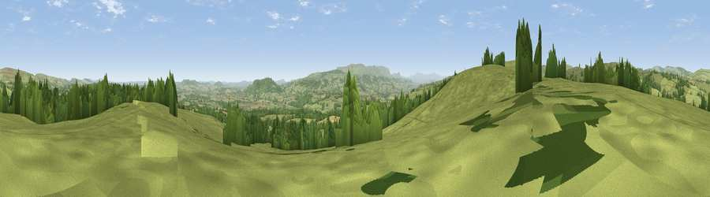

Viewpoint near Whitney
#12349 in England · top 34% of its area beats it · near WhitneyWhere it is
The exact computed spot (SO 25125 50075). Click the marker for map links.
The view, rendered

A 360° render of this exact spot computed from the terrain model, tree cover and land cover — summer colours, afternoon light, calibrated against photographs of famous viewpoints. Real trees, hedges and buildings will differ in detail.
The panorama
Grey silhouette: terrain skyline in each direction (720 bearings, Earth curvature and refraction included). Dashed green: skyline with trees (+15 m) and buildings (+8 m) as obstacles. Blue strip: how far the ground is visible on each bearing.
Where the view opens
Wedge length = distance to the farthest visible ground on that bearing (vegetation-aware). Rings at 10, 25 and 50 km.
What fills the view
76% grassland · 15% woodland · 9% cropland
Angular shares of the visible panorama (visual magnitude), not map area. Landscape diversity 0.32 (0–1 Shannon).
Key numbers
More beautiful places nearby
The staircase of upgrades: each row has a higher view potential than everything closer. Driving times are estimates from straight-line distance, calibrated against real road routing — check an actual route before setting out.
| Place | Direction | Drive | Score |
|---|---|---|---|
| Viewpoint near Whitney | WSW · 0 km | ~1 min | 68.0 |
| Viewpoint near Huntington | N · 7 km | ~14 min | 76.2 |
| Merbach Hill | SE · 7 km | ~15 min | 81.1 |
| Viewpoint near Craswall | S · 13 km | ~24 min | 81.5 |
| Gatley Hill | NE · 27 km | ~44 min | 82.6 |
| Garway Hill | SE · 31 km | ~48 min | 84.6 |
| Herefordshire Beacon | E · 52 km | ~73 min | 85.8 |
| Millennium Hill | E · 52 km | ~73 min | 86.9 |
52.14387, -3.09558 · source: screening · position refined by local search. Computed location — check access rights before visiting.